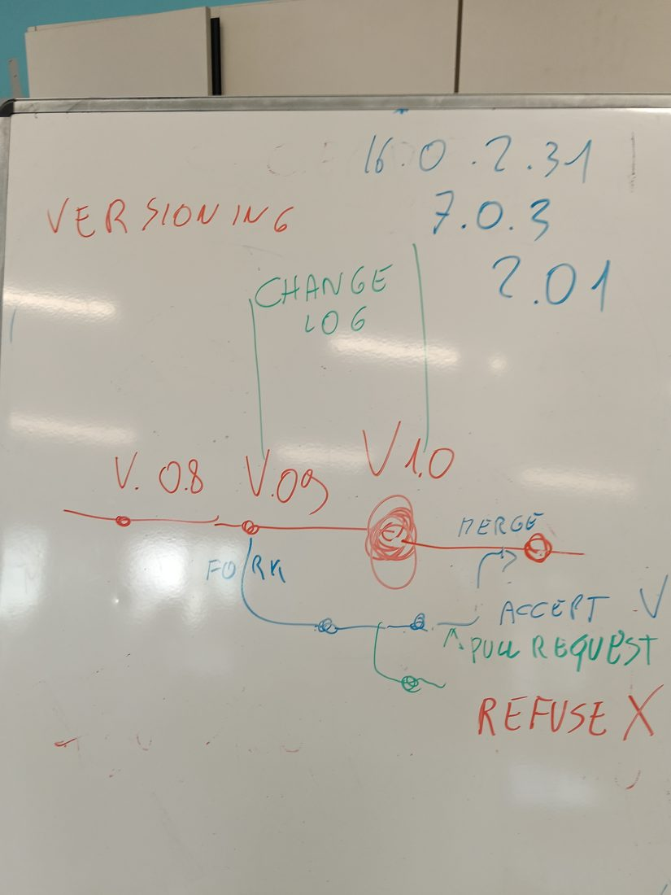

1INF · 09/10/2026 · una sola pagina per tutto il compito · si aggiorna da sola ogni 5 minuti
Fai un passo alla volta. Carta e penna sul banco. · خطوة بخطوة · 一步一步来
ضع الورقة والقلم على الطاولة: اليوم نرسم الرسم البياني باليد.
桌上放好纸和笔：今天我们用手画版本图。
اربح فوراً: افتح الرسم البياني، اضغط أول دائرة زرقاء (v0.0) ثم الزر الأخضر، والعب 30 ثانية. ثم اضغط الدائرة البنفسجية (v2.0) والعب. اكتب على الورقة شيئين تغيّرا.
马上赢：打开版本图，点第一个蓝色圆点（v0.0），按绿色按钮，玩30秒。再点紫色圆点（v2.0）再玩。在纸上写两样改变了的东西。
اقرأ الكلمات الثماني (الجدول أدناه) وانسخها على الورقة مع الترجمة بلغتك.
读下面表格里的8个词，把它们和你的语言的翻译一起抄在纸上。
اضغط دوائر فرعك (برتقالي لـ 1INF، أزرق لـ 2INF) واقرأ ماذا تغيّر ولماذا. ابحث عن النسخة التي فيها شيء صنعه صفك.
点你们分支的圆点（1INF 是橙色，2INF 是蓝色），读「改变了什么，为什么」。找到有你们班做的东西的版本。
ارسم باليد رسماً بثلاثة ألوان: الفرع الرئيسي، نسخة fork، وفرع عمل يعود بـ merge. اكتب رقم النسخة تحت كل دائرة.
手画图：用三种颜色画：主分支、一个 fork、一个用 merge 合并回来的工作分支。在每个圆点下写版本号。
اشرح لزميلك بكلماتك: ما هو merge، ولماذا نسخة Godot اسمها 2.0 وليس 1.2.
用你自己的话给同学讲：什么是 merge，为什么 Godot 版本叫 2.0 而不是 1.2。

أرقام النسخ: 16.0.2.31 · 7.0.3 · 2.01. الرقم الأول = تغيير كبير (major)، الثاني = إضافات (minor)، الثالث = تصحيح أخطاء صغيرة (patch)، الرابع = رقم البناء (build).
版本号：16.0.2.31 · 7.0.3 · 2.01。第一个数字 = 大改变（major），第二个 = 增加功能（minor），第三个 = 小的错误修正（patch），第四个 = 构建号（build）。
الفرع الرئيسي (بالأحمر): v0.8 ← v0.9 ← v1.0. الدائرة الكبيرة هي v1.0: أول نسخة مستقرة تُنشر.
主分支（红色）：v0.8 → v0.9 → v1.0。大圆圈是 v1.0：第一个稳定版本，用来发布（release）。
سجل التغييرات (بالأخضر): قائمة بكل ما تغيّر من نسخة إلى أخرى.
更新日志（绿色框）：从一个版本到下一个版本改变了什么的清单。
النسخة المستقلة fork (بالأزرق): من v0.9 ينسخ شخص المشروع ويعمل وحده.
复刻 fork（蓝色）：从 v0.9 有人复制了项目，自己继续工作。
طلب الدمج Pull Request: من النسخة المستقلة نقترح التعديل. إذا كان جيداً ← قبول ✓ ثم دمج merge: يدخل التعديل في الفرع الأحمر.
合并请求 Pull Request：从复刻向主项目提出修改。如果可以 → 接受 ✓ 然后合并 merge：修改进入红色分支，产生新版本。
الفرع الأخضر في الأسفل: اقتراح غير جيد ← مرفوض ✗. لا يدخل المشروع لكنه لا يضيع.
下面的绿色分支：一个不好的建议 → 拒绝 ✗。它不进入项目，但不会丢失，可以修改后再提出。
| Italiano | العربية | 中文 | Nel nostro gioco |
|---|---|---|---|
| versione (commit) | نسخة (حفظ commit) | 版本（提交 commit） | Ogni pallino del grafo: v0.3, v1.1, v2.0… |
| ramo (branch) | فرع (branch) | 分支（branch） | Una linea del grafo: il gioco cresce lungo il ramo. |
| fork (copia) | نسخة مستقلة (fork) | 复刻（fork，复制） | La 1INF copia il gioco della 2INF e lo fa crescere per conto suo. |
| Pull Request (proposta di modifica) | اقتراح تعديل (Pull Request) | 修改建议（Pull Request） | Il vostro Documento su Classroom: «il mio cattivo si chiama…». |
| merge (unione) | دمج (merge) | 合并（merge） | Il ramo «immagini» rientra nel ramo della 1INF. |
| versione minor (1.1, 1.2…) | إصدار صغير (1.1، 1.2…) | 小版本（1.1、1.2……） | Piccole aggiunte: un cattivo nuovo, un cielo nuovo. |
| versione major (2.0) | إصدار كبير (2.0) | 大版本（2.0） | Cambia una cosa grossa: il motore diventa Godot. |
| release (versione pubblicata) | إصدار منشور (release) | 发布（release） | La versione che tutti possono giocare con un link. |
v0.x = تجارب. 1.0 = أول نسخة حقيقية. 1.1، 1.2 = إضافات صغيرة (minor). 2.0 = تغيير كبير (major): الرقم الأول يزيد والثاني يعود إلى 0.
v0.x = 试验。1.0 = 第一个真正的版本。1.1、1.2 = 小的增加（minor）。2.0 = 大的改变（major）：第一个数字加一，第二个数字回到 0。
لنجرّب شيئاً جديداً دون أن نكسر اللعبة التي تعمل. في الشركات يعمل كل واحد على فرعه، ثم Pull Request، ثم مراجعة، ثم merge.
为了试新东西而不弄坏能玩的游戏。在公司里大家都这样工作：每人在自己的分支上，然后 Pull Request、检查、合并（merge）。
Godot محرك حقيقي للألعاب، مجاني ولا يحتاج تثبيت. أشراركم ما زالوا موجودين في ملف البيانات cattivi.json. Lazarus ينتظر النقرة، Godot ينبض 60 مرة في الثانية.
Godot 是真正的游戏引擎，免费、不用安装。你们的坏人还在数据文件 cattivi.json 里。Lazarus 等待点击，Godot 每秒跳动约60次。
Ogni proposta (A5, Pull Request) diventa un ramo che parte dalla v2.0: grigio = in attesa, verde = accettata (merge), rosso = rifiutata. Si aggiorna da solo.
Scrivi la TUA password (quella dei tuoi libri) e premi «Apri». · اكتب كلمة السر · 写你的密码